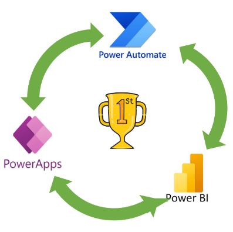

how to digitize with power platform
The Winner trio for digital transformation: Power App, Power Automate and Power BI


In 2014, AUDI held a gitial showroom for the first time. Creating a small room where they showed all the vehicles in the catalog, in 3D and giving an immersive experience to potential customers, in the middle of shopping centers. Not having to renting a large space, not having to physically transport the vehicles nor hire staff and advertising for the event. In addition, sales increased by 60% compared to previous times.
Digitize – What is it?
Digital transformation is the process of using technology to change and improve dramatically how companies operate. It involves integrating the digital technology in all business areas, including strategy, operations, marketing and customer service. The digital transformation has become a crucial part of the success of any modern organization.
This type of transformation can be used to improve customer experience, optimize internal processes, increase efficiency and productivity, develop new services and products, and create better strategies growth. Digitalization helps companies to remain competitive in a landscape of ever-changing market by providing more efficient solutions for the needs of Your clients.
Digital transformation is no longer just a word fashionable, it is necessary for any company that want to be successful in the world highly competitive today. Companies must adopt the changes that transformation brings digital to remain relevant and prosperous in the future.
It also allows them to stay ahead of their competitors taking advantage of the new opportunities offered by digital technologies.
Benefits of digitization
La transformación digital aporta una multitud de beneficios en diversos aspectos de las operaciones empresariales y las interacciones con los clientes:
- Improved Efficiency: Automation and digital tools streamline processes, reducing manual efforts, costs operational and increase efficiency.
- Improving Customer Experience: The implementation of digital solutions allows personalized interactions, secure transactions and faster responses, improving satisfaction the client's.
- Greater Agility: Embrace digital technologies facilitates faster adaptation to changes in the market, allowing companies to remain competitive and agile in times of constant evolution.
- Data-Based Decision Making: Access to Comprehensive data and analysis powers decision-making informed decisions, leading to choices more strategic and impactful business initiatives.
- Innovation Opportunities: The transformation digital encourages the development of new products/services and market offers.
- Scalability and Growth: Digital technologies provide scalable solutions, allowing companies expand and reach new markets more efficient way.
- Increasing Collaboration: The Tools Digital technologies facilitate collaboration between teams, regardless of geographical barriers, encouraging better teamwork and productivity.
- Improvement of Security Measures: digital tools incorporate protocols of Robust security to protect data, protecting companies from cyber threats and breaches.
How to Digitize? Power Platform
Most medium or large companies already work with Microsoft, having your users have an Office365 account to access email, Teams, etc. So, we will not offer you other applications external, we will take advantage of the fact that they already work with Office365 to deliver technological solutions that they will have in the same work environment.
Within Office365, there is power platform, the platform where they coexist different applications, including: Power Apps, Power Automate and Power BI, which together make a perfect winning trio to develop and solve any internal technological need that a company has.
Power Apps is a tool that allows you to create applications with no or little code (called
low-code). On the other hand, Power Automate is a tool application connector that allows you
to automate business processes, usually routine.In today's digital age, operational efficiency is key to success business. With Microsoft Power Platform tools, Companies can transform their manual processes into workflows digital, optimized and fully automated.
Power Platform - The tools
 Power Apps is a development platform of applications that allow you to create custom internal applications, without need or little knowledge of programming quickly.
Power Apps is a development platform of applications that allow you to create custom internal applications, without need or little knowledge of programming quickly.
With an intuitive drag-and-drop interface, you can design mobile and web applications that adapt to the needs of your business.
From data entry forms to complex management applications, Power Apps gives you the flexibility to create tailored solutions that drive productivity and collaboration within your organization.
 Power Automate is a tool workflow automation that allows you to connect your applications and services favorites to automate tasks repetitive and free up time for activities more important.
Power Automate is a tool workflow automation that allows you to connect your applications and services favorites to automate tasks repetitive and free up time for activities more important.
From approving applications to data integration between systems, Power Automate simplifies the automation of business processes without the need for write code. Furthermore, its integration with Power Apps allows you to create workflows complete works that cover from the data entry to decision making decisions based on time analysis real.
 Power BI is an analytics platform business that allows you to view and share data intuitively to make more informed decisions.
Power BI is an analytics platform business that allows you to view and share data intuitively to make more informed decisions.
Connect your data sources, from databases from data to cloud services, and creates interactive reports and dashboards dynamic that provide valuable insights into your business performance.
Additionally, Power BI allows you to share these insights safely within your organization or with external partners, facilitating collaboration and decision-making data-driven decisions.
Power Platform - Workflow sample
Success stories
- The company's internal Ticketing application, where users could make requests to various departments: IT, Office, HR, Operations, etc.
- Recommendation application: Any user of the company could recommend a potential client, this was registered automatically in the company's CRM, with all its data.
- Application integrated into Power BI, allowing users to enter or edit data in the same report and update the report and even automate the creation of a PPT presentation.
- Billing system: Creating an invoice creation flow with several approval steps, assigning roles for different invoice approvers, and saving invoices in PDF format in Sharepoint.
- Automation of daily tasks: entering data received by email and saving the file in Sharepoint, connecting and save this data in the databases. Data visible in the internal App and in the report created to provide Intelligence Intelligence business.
- Data management, visualization and analysis: As data experts, we work on all aspects of data from start to finish, providing business intelligence that helps make decisions and create business strategies.
- Invoice saving automation:All invoices from suppliers arrive in a corporate mailbox. We take the attached file (invoice in PDF format) and analyze it with AI Microsoft to get all the text out. Once we have the text we can initialize a chain of checks. Ex.: if the text contains the word “Barcelona” it will mean that you have to. Sort into the /Rao/Barcelona folder. With the OneDrive connector, the invoice will be sent to the save service internal.
I'll be digging more into this tools in future posts.